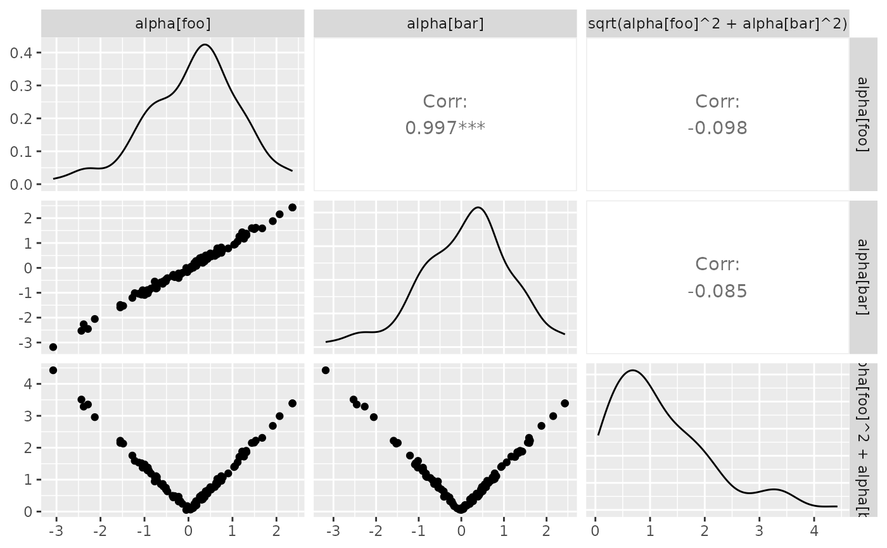
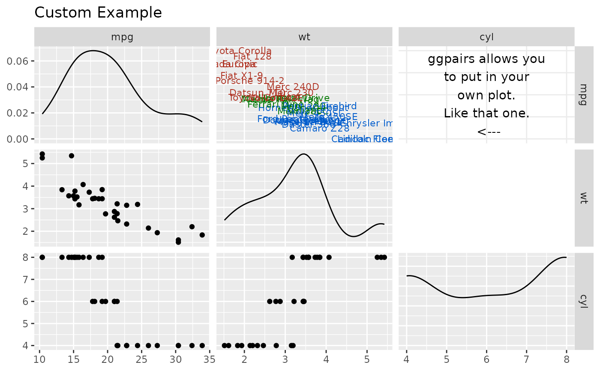
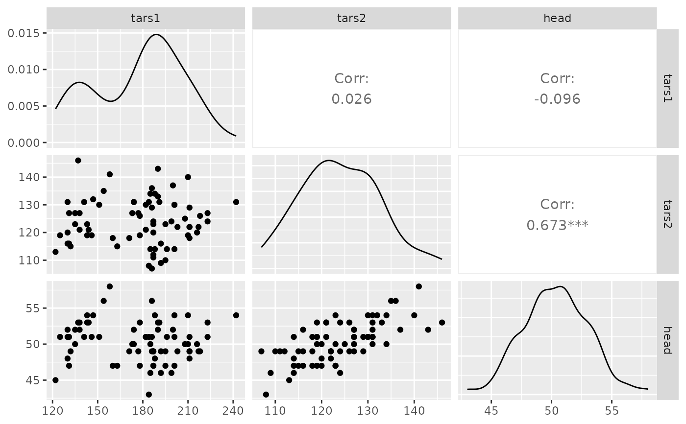
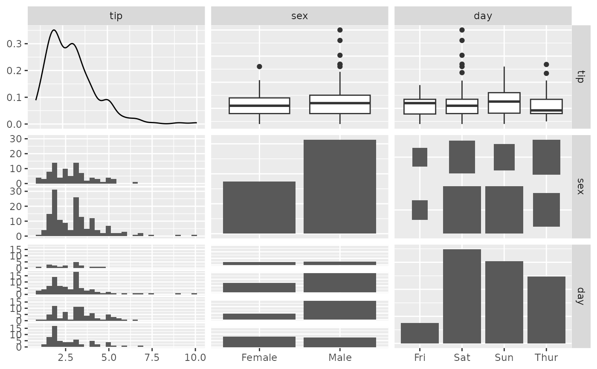
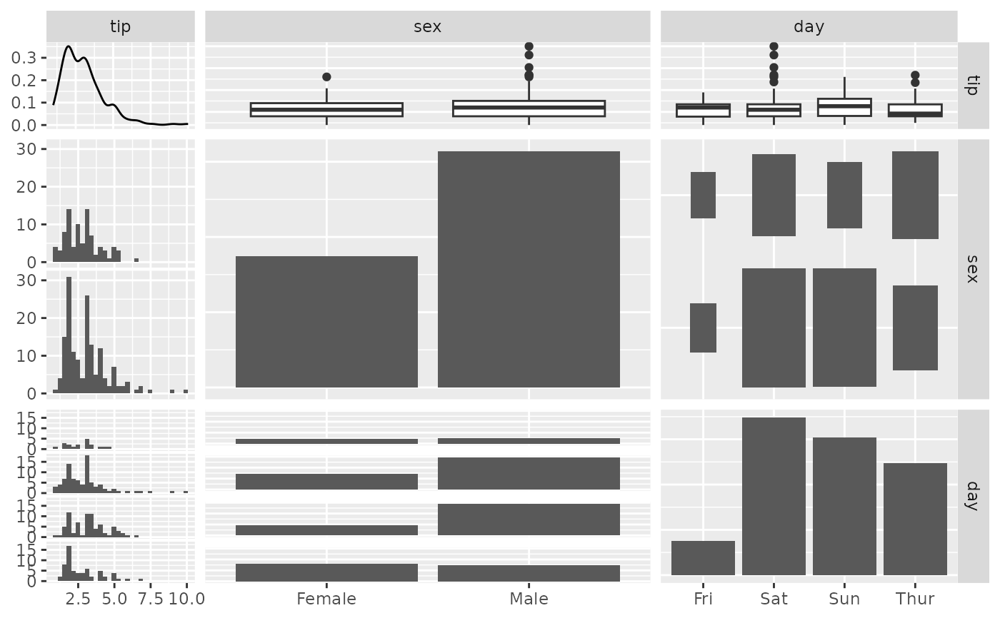

Make a matrix of plots with a given data set
ggpairs( data, mapping = NULL, columns = 1:ncol(data), title = NULL, upper = list(continuous = "cor", combo = "box_no_facet", discrete = "count", na = "na"), lower = list(continuous = "points", combo = "facethist", discrete = "facetbar", na = "na"), diag = list(continuous = "densityDiag", discrete = "barDiag", na = "naDiag"), params = NULL, ..., xlab = NULL, ylab = NULL, axisLabels = c("show", "internal", "none"), columnLabels = colnames(data[columns]), labeller = "label_value", switch = NULL, showStrips = NULL, legend = NULL, cardinality_threshold = 15, progress = NULL, proportions = NULL, legends = stop("deprecated") )
Arguments
| data | data set using. Can have both numerical and categorical data. |
|---|---|
| mapping | aesthetic mapping (besides |
| columns | which columns are used to make plots. Defaults to all columns. |
| title, xlab, ylab | title, x label, and y label for the graph |
| upper | see Details |
| lower | see Details |
| diag | see Details |
| params | deprecated. Please see |
| ... | deprecated. Please use |
| axisLabels | either "show" to display axisLabels, "internal" for labels in the diagonal plots, or "none" for no axis labels |
| columnLabels | label names to be displayed. Defaults to names of columns being used. |
| labeller | labeller for facets. See |
| switch | switch parameter for facet_grid. See |
| showStrips | boolean to determine if each plot's strips should be displayed. |
| legend | May be the two objects described below or the default
|
| cardinality_threshold | maximum number of levels allowed in a character / factor column. Set this value to NULL to not check factor columns. Defaults to 15 |
| progress |
|
| proportions | Value to change how much area is given for each plot. Either |
| legends | deprecated |
Value
ggmatrix object that if called, will print
Details
upper and lower are lists that may contain the variables
'continuous', 'combo', 'discrete', and 'na'. Each element of the list may be a function or a string. If a string is supplied, it must be a character string representing the tail end of a ggally_NAME function. The list of current valid ggally_NAME functions is visible in a dedicated vignette.
- continuous
This option is used for continuous X and Y data.
- combo
This option is used for either continuous X and categorical Y data or categorical X and continuous Y data.
- discrete
This option is used for categorical X and Y data.
- na
This option is used when all X data is
NA, all Y data isNA, or either all X or Y data isNA.
diag is a list that may only contain the variables 'continuous', 'discrete', and 'na'. Each element of the diag list is a string implementing the following options:
- continuous
exactly one of ('densityDiag', 'barDiag', 'blankDiag'). This option is used for continuous X data.
- discrete
exactly one of ('barDiag', 'blankDiag'). This option is used for categorical X and Y data.
- na
exactly one of ('naDiag', 'blankDiag'). This option is used when all X data is
NA.
If 'blank' is ever chosen as an option, then ggpairs will produce an empty plot.
If a function is supplied as an option to upper, lower, or diag, it should implement the function api of function(data, mapping, ...){#make ggplot2 plot}. If a specific function needs its parameters set, wrap(fn, param1 = val1, param2 = val2) the function with its parameters.
References
John W Emerson, Walton A Green, Barret Schloerke, Jason Crowley, Dianne Cook, Heike Hofmann, Hadley Wickham. The Generalized Pairs Plot. Journal of Computational and Graphical Statistics, vol. 22, no. 1, pp. 79-91, 2012.
See also
wrap v1_ggmatrix_theme
Author
Barret Schloerke, Jason Crowley, Di Cook, Heike Hofmann, Hadley Wickham
Examples
# small function to display plots only if it's interactive p_ <- GGally::print_if_interactive ## Quick example, with and without colour data(flea) ggpairs(flea, columns = 2:4)# Note: colour should be categorical, else you will need to reset # the upper triangle to use points instead of trying to compute corr data(tips, package = "reshape") pm <- ggpairs(tips[, 1:3]) p_(pm)#>#>#>#>pm <- ggpairs(tips, upper = "blank") p_(pm)#>#>#>#>#>#>#>#>#>#>#>#>## Plot Types # Change default plot behavior pm <- ggpairs( tips[, c(1, 3, 4, 2)], upper = list(continuous = "density", combo = "box_no_facet"), lower = list(continuous = "points", combo = "dot_no_facet") ) p_(pm)# Supply Raw Functions (may be user defined functions!) pm <- ggpairs( tips[, c(1, 3, 4, 2)], upper = list(continuous = ggally_density, combo = ggally_box_no_facet), lower = list(continuous = ggally_points, combo = ggally_dot_no_facet) ) p_(pm)# Use sample of the diamonds data data(diamonds, package="ggplot2") diamonds.samp <- diamonds[sample(1:dim(diamonds)[1], 1000), ] # Different aesthetics for different plot sections and plot types pm <- ggpairs( diamonds.samp[, 1:5], mapping = ggplot2::aes(color = cut), upper = list(continuous = wrap("density", alpha = 0.5), combo = "box_no_facet"), lower = list(continuous = wrap("points", alpha = 0.3), combo = wrap("dot_no_facet", alpha = 0.4)), title = "Diamonds" ) p_(pm)## Axis Label Variations # Only Variable Labels on the diagonal (no axis labels) pm <- ggpairs(tips[, 1:3], axisLabels="internal") p_(pm)#>#># Only Variable Labels on the outside (no axis labels) pm <- ggpairs(tips[, 1:3], axisLabels="none") p_(pm)#>#>## Facet Label Variations # Default: df_x <- rnorm(100) df_y <- df_x + rnorm(100, 0, 0.1) df <- data.frame(x = df_x, y = df_y, c = sqrt(df_x^2 + df_y^2)) pm <- ggpairs( df, columnLabels = c("alpha[foo]", "alpha[bar]", "sqrt(alpha[foo]^2 + alpha[bar]^2)") ) p_(pm)# Parsed labels: pm <- ggpairs( df, columnLabels = c("alpha[foo]", "alpha[bar]", "sqrt(alpha[foo]^2 + alpha[bar]^2)"), labeller = "label_parsed" ) p_(pm)## Plot Insertion Example custom_car <- ggpairs(mtcars[, c("mpg", "wt", "cyl")], upper = "blank", title = "Custom Example") # ggplot example taken from example(geom_text) plot <- ggplot2::ggplot(mtcars, ggplot2::aes(x=wt, y=mpg, label=rownames(mtcars))) plot <- plot + ggplot2::geom_text(ggplot2::aes(colour=factor(cyl)), size = 3) + ggplot2::scale_colour_discrete(l=40) custom_car[1, 2] <- plot personal_plot <- ggally_text( "ggpairs allows you\nto put in your\nown plot.\nLike that one.\n <---" ) custom_car[1, 3] <- personal_plot p_(custom_car)## Remove binwidth warning from ggplot2 # displays warning about picking a better binwidth pm <- ggpairs(tips, 2:3) p_(pm)#># no warning displayed pm <- ggpairs(tips, 2:3, lower = list(combo = wrap("facethist", binwidth = 0.5))) p_(pm)# no warning displayed with user supplied function pm <- ggpairs(tips, 2:3, lower = list(combo = wrap(ggally_facethist, binwidth = 0.5))) p_(pm)## Remove panel grid lines from correlation plots pm <- ggpairs( flea, columns = 2:4, upper = list(continuous = wrap(ggally_cor, displayGrid = FALSE)) ) p_(pm)#> Warning: `displayGrid` is deprecated. Please use `display_grid`#> Warning: `displayGrid` is deprecated. Please use `display_grid`#> Warning: `displayGrid` is deprecated. Please use `display_grid`#>#>#>#>#>#>